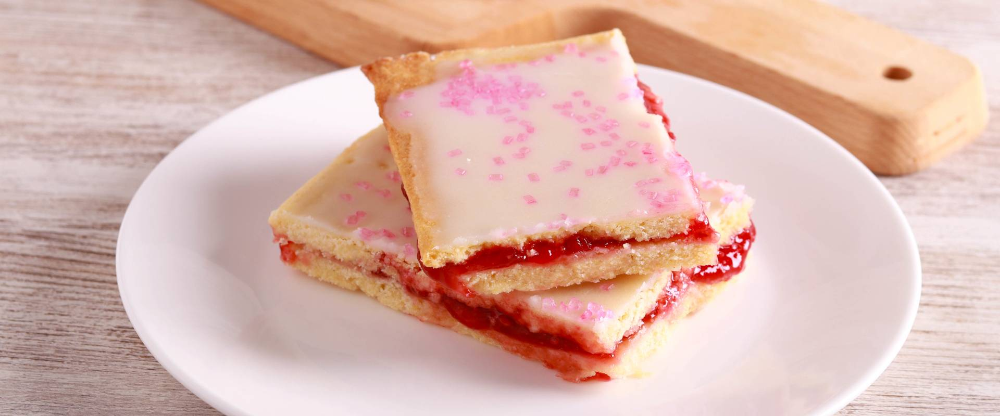

Lekváros-vajas szelet

Dán recept szerint készül az alábbi isteni sütemény, amelyben a vaj és a málnalekvár a főszereplők
Hozzávalók
Tészta
- 35 dkg liszt
- 12 dkg porcukor
- 1 csipet só
- 20 dkg vaj
- 1 db tojás
- 1 tk vaníliakivonat
Összeállítás
- 16 dkg málnalekvár
- 24 dkg porcukor
- 3 ek citromlé
- 2 ek szárított málna (opcionális)
Elkészítés
- A lisztet szitáljuk egy tálba, adjuk hozzá a porcukrot és a sót. Kockázzuk bele a hideg vajat, morzsoljuk vele össze. Üssük rá a tojást, öntsük rá a vaníliakivonatot, majd gyúrjuk egybe a tésztát. A tésztagombócot csomagoljuk folpackba, és tegyük a hűtőbe 30 percre.
- Melegítsük elő a sütőt 180 fokra. A tésztát szedjük két részre. Mindkettőt nyújtsuk ki két sütőpapír között egy-egy 25x30 centis téglalappá. A felületüket szurkáljuk meg villával.
- Tegyük az egyiket sütőpapírostól egy nagy tepsi hátuljára, majd süssük meg 15-20 perc alatt. Járjunk el így a másikkal is. Várjuk meg, míg kihűlnek a lapok.
- Az egyik lapot kenjük meg a málnalekvárral, majd tegyük a tetejére a másikat, picit nyomjuk le.
- A porcukrot keverjük össze 2-3 ek. citromlével, míg kenhető, picit folyósabb nem lesz. A mázat egyenletesen oszlassuk el a süti tetején, majd szórjuk meg rögtön szárított málnával. Hagyjuk állni 1 órát, míg megköt a cukormáz, majd tálaljuk.